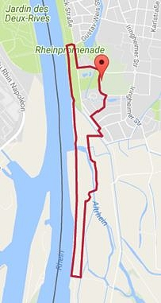
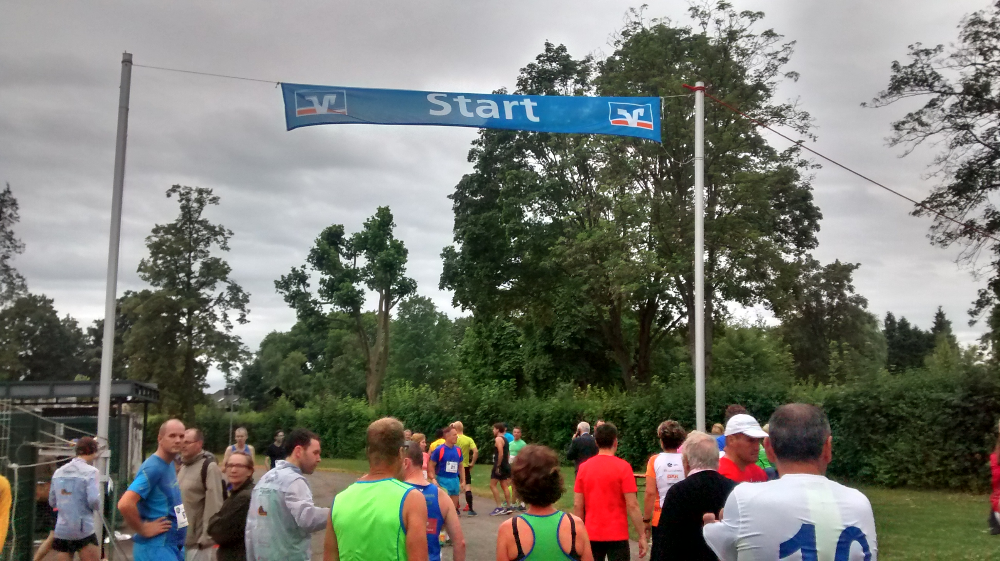
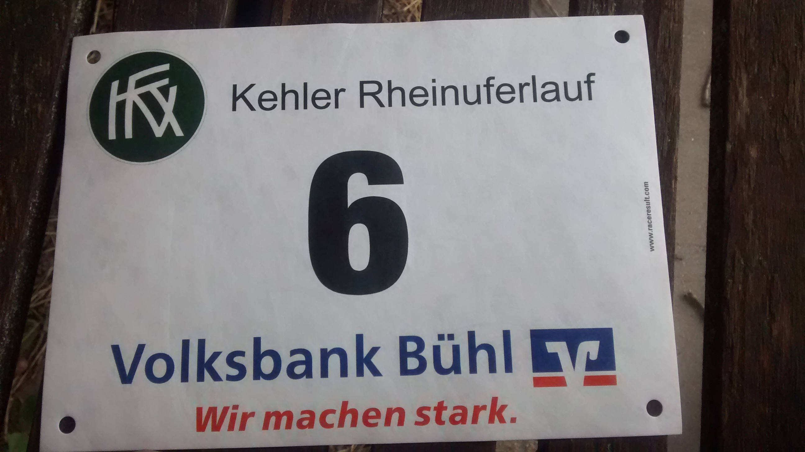
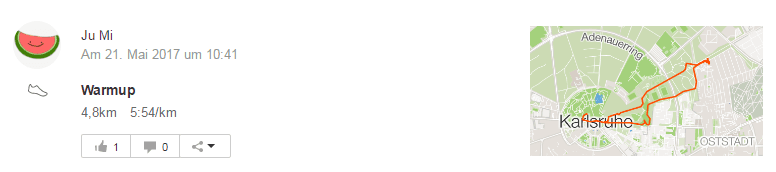
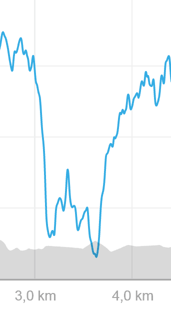
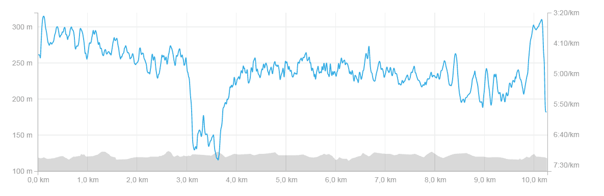

Renninformationen
Wo: KehlWie weit: 10 km
Webseite: hhttps://www.kehler-rheinuferlauf.de/ 
Ziele
- 1. Zur angemessenen Zeit ankommen und aufwärmen ✓
- 2. Konstante Geschwindigkeit halten ✓
- 3. Keine Seitenstechen ✕
- 4. Auf's Podest kommen ✓
- 5. Bestzeit von 43:32 schlagen ✓
Splits
| Kilometer | Zeit (min:sek) |
|---|---|
| 1 | 4:22 |
| 2 | 4:12 |
| 3 | 4:19 |
| 4 | 4:20 |
| 5 | 4:14 |
| 6 | 4:14 |
| 7 | 4:20 |
| 8 | 4:26 |
| 9 | 4:23 |
| 10 | 4:23 |
| Ø | 4:18 |
Bilder

Training
Seit dem Marathon war ja ein 10k wieder das nächste Ziel. Der Schlossparklauf war nur der Vorbereiter. Der Zwischenschritt.
Now's the real deal:
Und diesmal soll es auf's Podest.
Vor dem Rennen
Dinge die ich bisher gelernt habe: Man kann nie früh genug da sein. Man kann nie früh genug zur Toilette gehen.
Dinge die ich lernen musste: Man KANN sich zu früh aufwärmen. Nämlich 5km-zu-lang.

Im Rennen
1. Kilometer: Mit dem Startschuss ging das Gedrängle los. 10km Läufer, 5km Läufer und 5km Walker alle gleichzeitig. 150 Teilnehmer. Noch so beiläufig wurde uns erwähnt, dass das Ausgangstor aus dem Park nicht geöffnet werden konnte. Also wer hinter den Walkern raus wollte hat einbußen müssen. Das hab ich mir nicht erlauben lassen.
2. Kilometer: Die Strecke war nun gerade, das Gedrängle hat aufgehört. Komplett. Vorne war nur noch Sicht auf 10-20 und nach hinten wollte ich garnicht mehr blicken.
3. Kilometer: Bei der Kurve in den Wald fing die Katastrophe an: Seitenstechen. Aber von der Art wie ich sie nur 1-2 Mal im Training erleben musste. Da hat auch der einfache Trick mit der Atmung auf dem anderen Bein nicht mehr geholfen hilft. Komplett crash
3. Kilometer: Bei der Kurve in den Wald fing die Katastrophe an: Seitenstechen. Aber von der Art wie ich sie nur 1-2 Mal im Training erleben musste. Da hat auch der einfache Trick mit der Atmung auf dem anderen Bein nicht mehr geholfen hilft. Komplett crash
4. Kilometer: Nach dem ich mir verzweifelt ansehen musste wie mich alles überholt, sind die Seitenstechen wieder weg. Ab hier ging dann das lustige Überholspiel los.
5. Kilometer: Die 10km-Läufer sind einen Umweg gelaufen und jetzt treffen die Strecke für 10km und 5km wieder aufeinander bis sie sich kurz danach wieder trennen. Jetzt hat man auch gesehen gegen wen man denn jetzt wirklich läuft.
6. Kilometer: Kurz vorher war eine Trinkstation, die echt beschissen gesetzt wurde. Man musste nach links abbiegen aber die Station haben sie einfach an den rechten Rand gestellt. Das und ich hab mich verschluckt. Hust
7. Kilometer: "Oh wow schon 7km. Ist ja fast schon zu Ende". Routine schlägt ein.
8. Kilometer: Ab hier machten sich meine schwachen Muskeln im Ober- und Unterkörper. "Ich muss mal das Core-Training anfangen", ging mir durch den Kopf.
9. Kilometer: Ab jetzt war ich froh wenn's vorbei war. Dieses Rennen war ab jetzt schon ein Eye-Opener. Hier muss definitiv noch gefeilt werden.
10. Kilometer: Nochmal der letzte Kick und Game Over. Wenigstens war mir nicht kotzübel aber das sagt ja schon aus, dass da noch mehr hätte gehen können.
Nach dem Rennen
Großes Danke an die Organisation und dem Veranstalter Ahmadiyya Muslim Jamaat. Dass das an einen guten Zweck ging, nämlich zugunsten des Förderverein zur Unterstützung der onkologischen Abteilung der Kinderklinik Karlsruhe e.V. und Humanity First e.V. war ein zusätzlicher Bonus.
Das war auch der einzige Trost am Rennen. Keins meiner Ziele konnte ich erfüllen. Endleistungen: